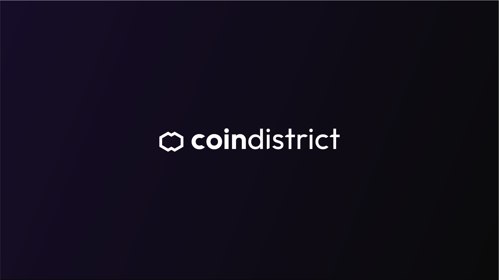

Coin District — Webdesign & UI/UX Dashboard
Refonte complète de l'interface et création du dashboard pour une plateforme de finance décentralisée. Mon objectif était de rendre la gestion d'actifs blockchain intuitive grâce à un design d'interface (UI/UX) épuré et sécurisant.
Logo, web design, ui/ux dashboard

Voir le projet Coin District →